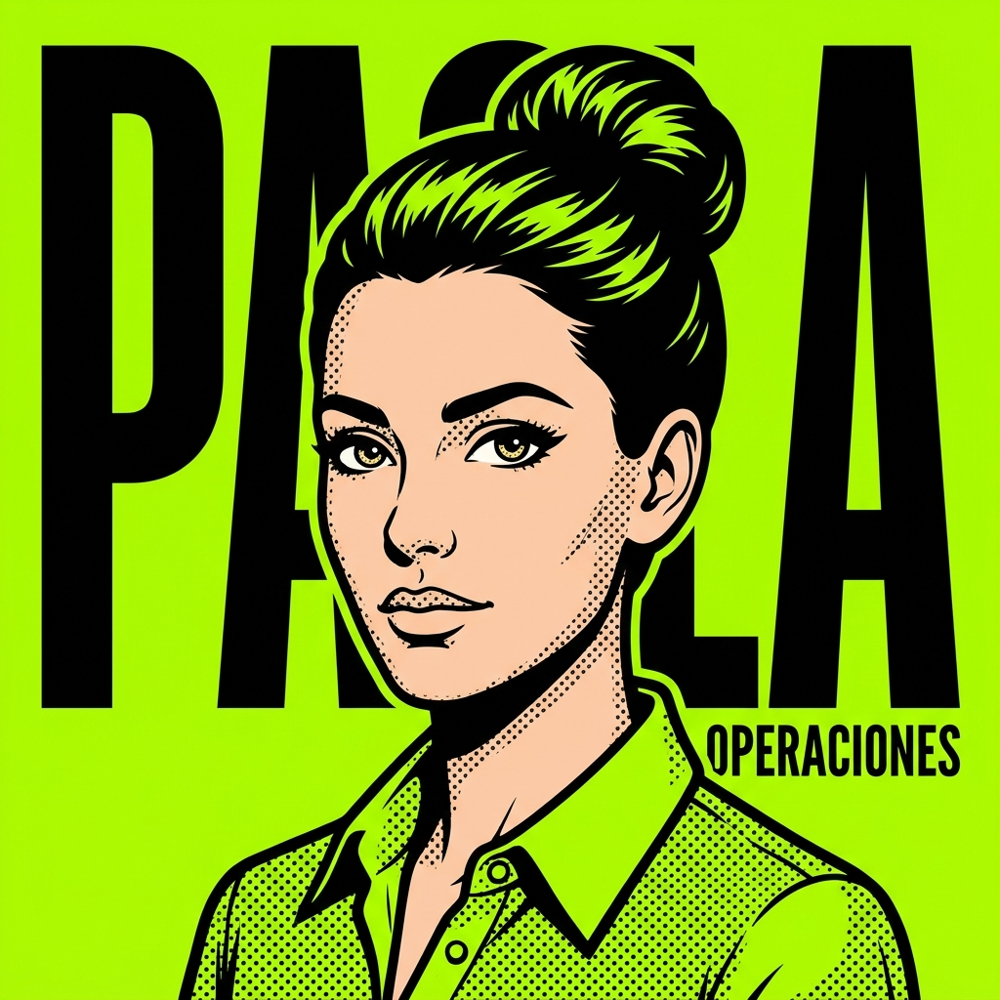

Soy tu consejera de operaciones de emergencia. Cuando un proceso se traba y todo se frena, me lo explicás por audio o me mandás la captura, y te destrabo el cuello de botella ahí mismo. Sin formularios, sin esperar al lunes.

Le escribís por WhatsApp como a tu jefa de operaciones de bolsillo. Estos son los mensajes que más rápido bajan tu carga operativa.
Identifica las tareas que más tiempo te roban y monta los flujos para que sucedan solas. Lo configuramos una vez y listo.
Conecta CRM, planillas, facturación, WhatsApp y email. Tus datos viajan solos y siempre actualizados.
Cada proceso crítico de tu negocio, escrito y vivo. Si alguien renuncia, no se va el conocimiento con él.
Reportes operativos semanales que muestran dónde se atasca el negocio y qué hacer para destrabarlo.
Le pedís que mire tus procesos y te devuelve dónde estás perdiendo tiempo,con números reales. Vos eligís por dónde empezar, ella arma el flujo y te muestra la prueba el mismo día.
Sus automatizaciones liberan a todo el consejo: Eva, Vladimir y Armando. Conócelos también.
Tu diagnóstico es gratis, dura 10 minutos y lo hago yo, Dario, por WhatsApp. Si encajamos, Paola estará destrabando tus procesos esta misma semana.